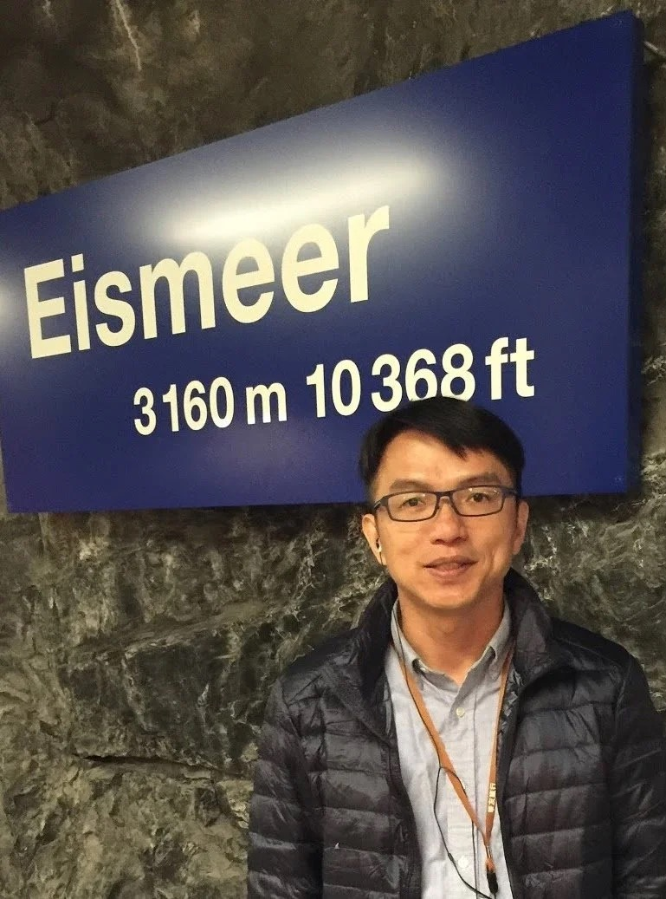
01
林恩仕
教授・美容教育專業顧問
具美容與化妝品應用教育背景，從高等教育、專業培育與實務教學角度，提供團隊跨域發展的專業視野。
MEET THE TEAM
團隊成員來自心理醫護等領域，由 Dr. IVY 串聯芳香教育、課程活動與專業合作。
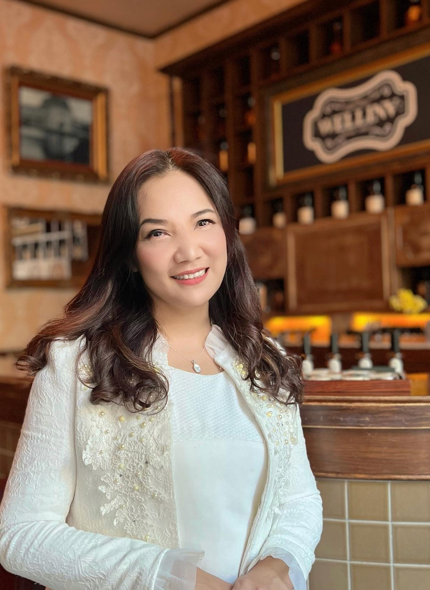
TEAM PRINCIPAL · LEAD MENTOR
團隊校長・最高指導由 Dr. IVY 統整芳香教育、調香培訓、講師培育與專業合作方向，陪伴團隊把各自的專業背景轉化成清楚、可實踐，也能持續累積的教學內容。
PROFESSIONAL ADVISORS
由教育與心理專業夥伴提供不同視角，協助團隊維持學習品質、專業界線與跨域合作深度。

教授・美容教育專業顧問
具美容與化妝品應用教育背景，從高等教育、專業培育與實務教學角度，提供團隊跨域發展的專業視野。
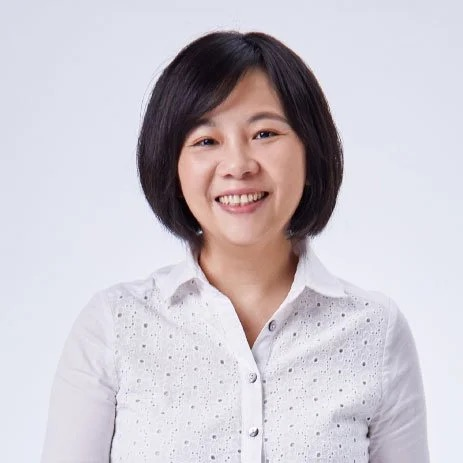
顧問・臨床心理師
以臨床心理與專業教育經驗，協助團隊在課程溝通、心理專業界線與跨域合作上保持清楚而穩定的方向。
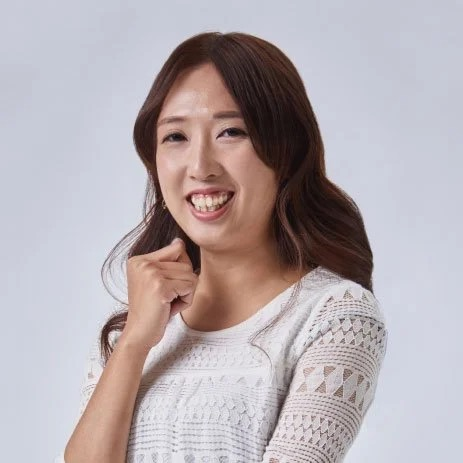
臨床心理專業講師
具臨床心理與團體教育背景，將專業觀察、溝通與學習引導帶入跨域課程與團隊交流。
LECTURER TEAM
依專業背景與實務經驗整理，讓學員與合作單位更容易理解每位講師可以帶來的視角。
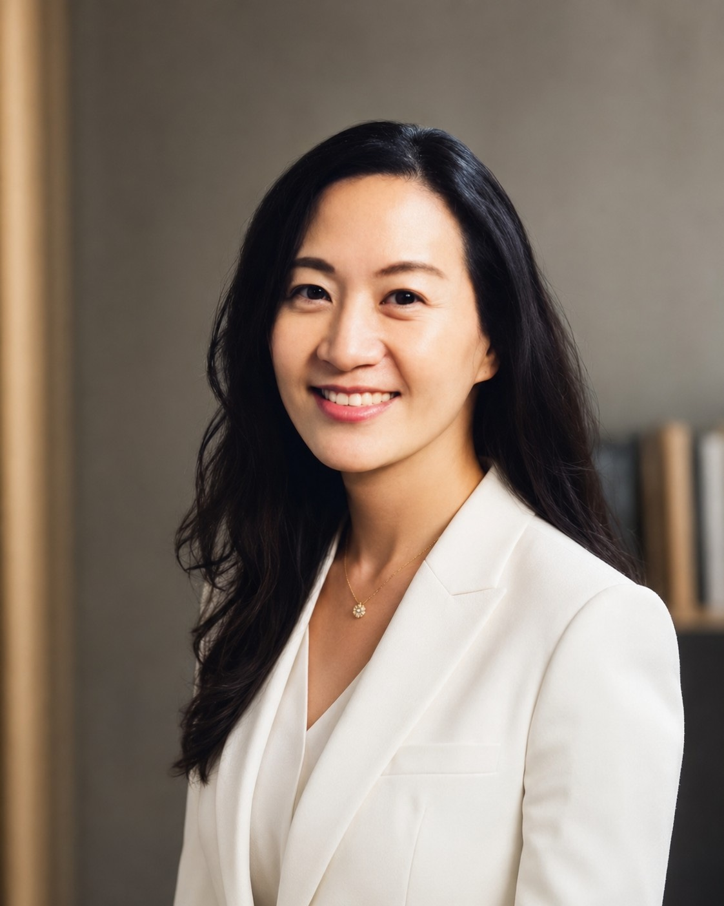
助理教授／護理教育講師
具護理臨床與高等教育背景，專長涵蓋急重症、高齡照護、擬真情境、實證護理與設計思考，擅長將專業照護經驗轉化為清楚可理解的教學內容。
傷口造口護理師／照護教育講師
具內外科、加護照護與生理檢查實務經驗，並投入傷口造口、園藝活動及社區教育，重視把專業照護知識轉化為貼近日常的學習內容。
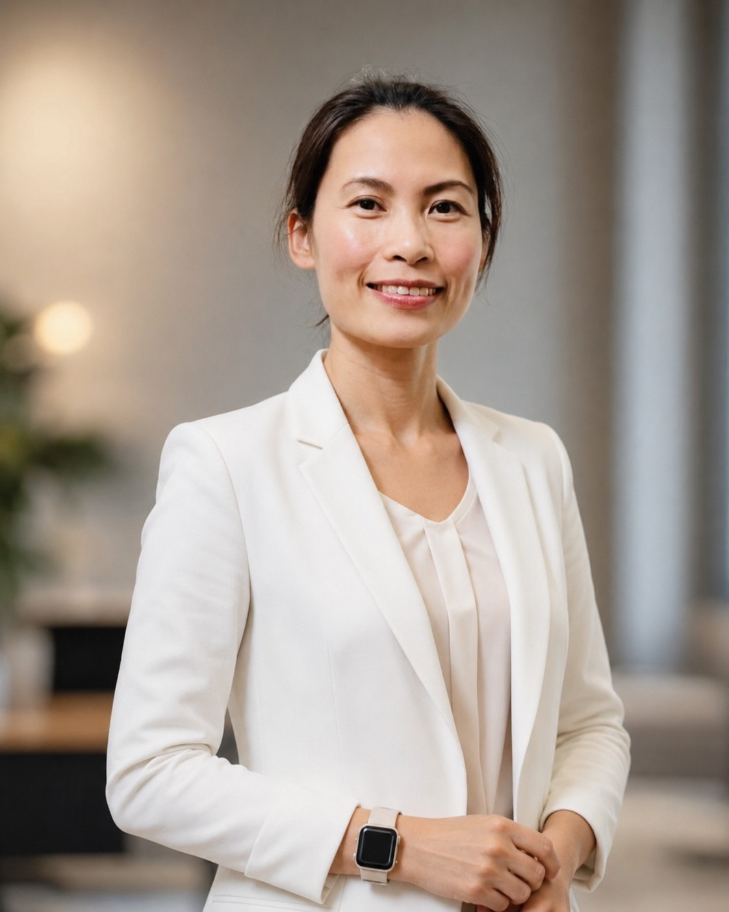
國際貿易與營運管理
具國際貿易、物流與營運管理經驗，擅長把策略轉化為可執行目標，並連結跨文化溝通、專案協作與供應流程。
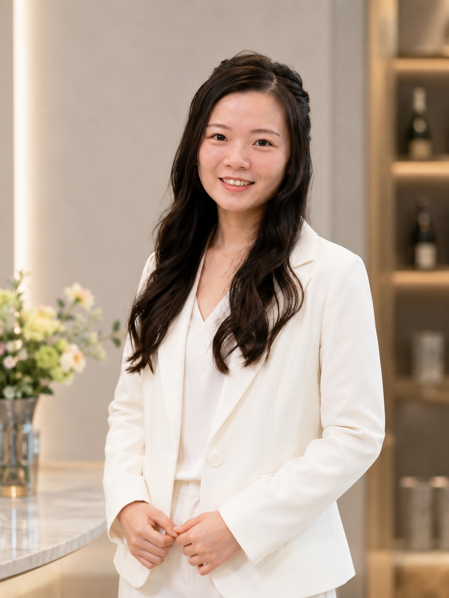
職業安全衛生護理師／護理教育講師
具婦產科病房與職業安全衛生護理背景，並有教學及芳香學習經驗，關注職場、婦幼與日常生活中的教育支持。
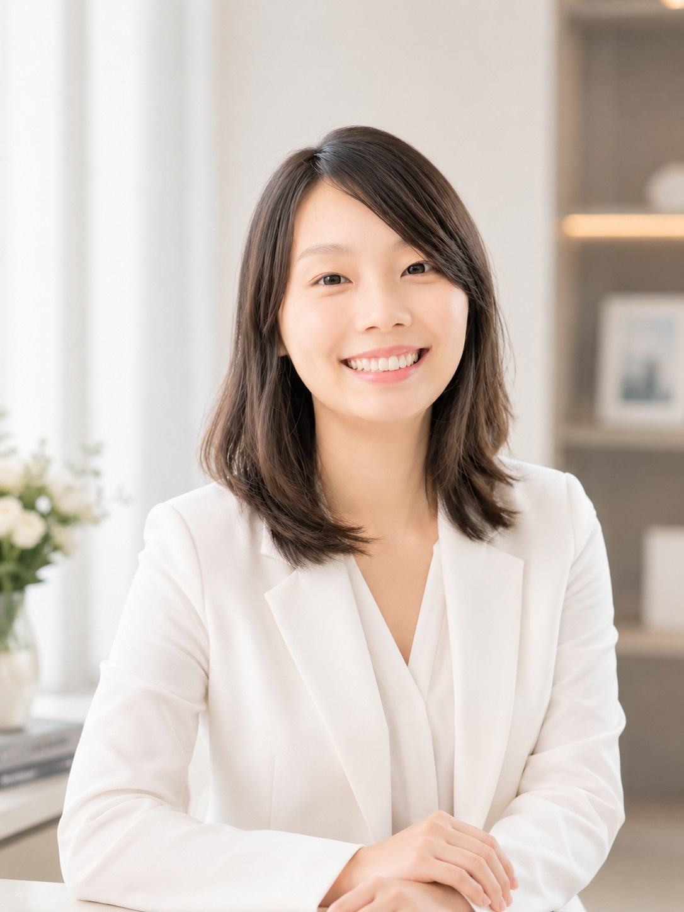
講師
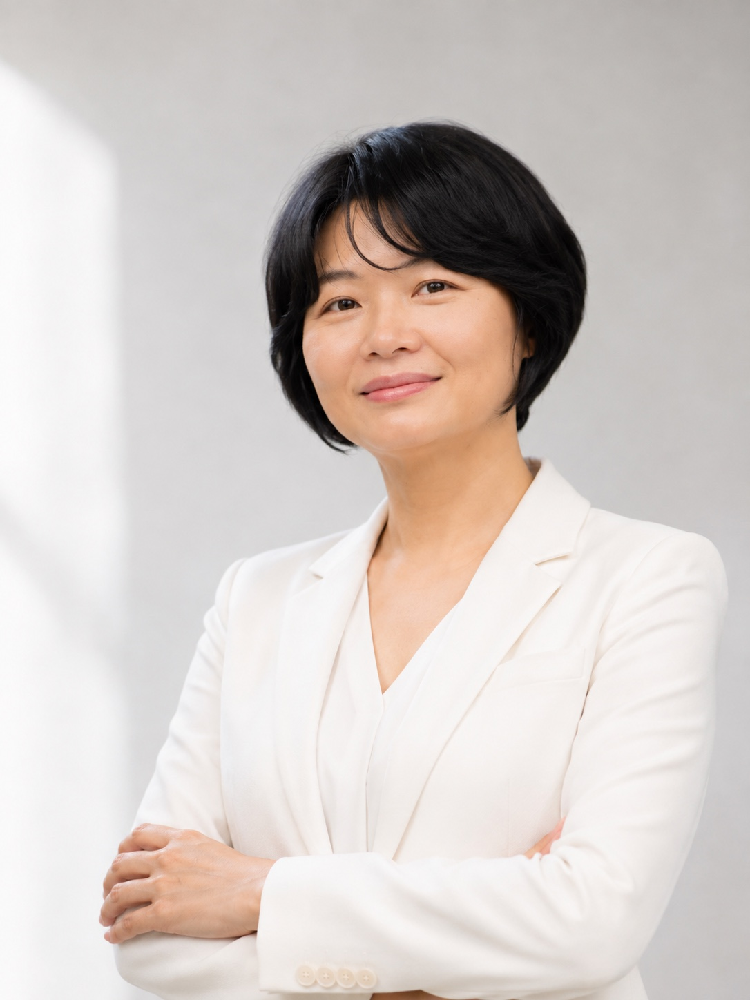
講師
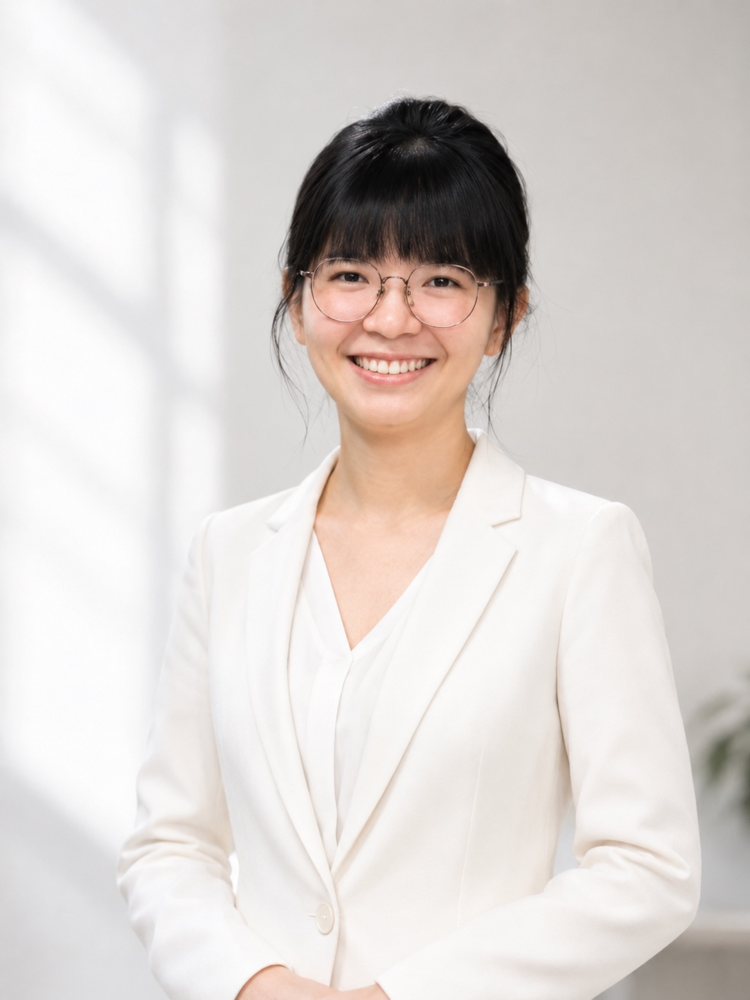
講師
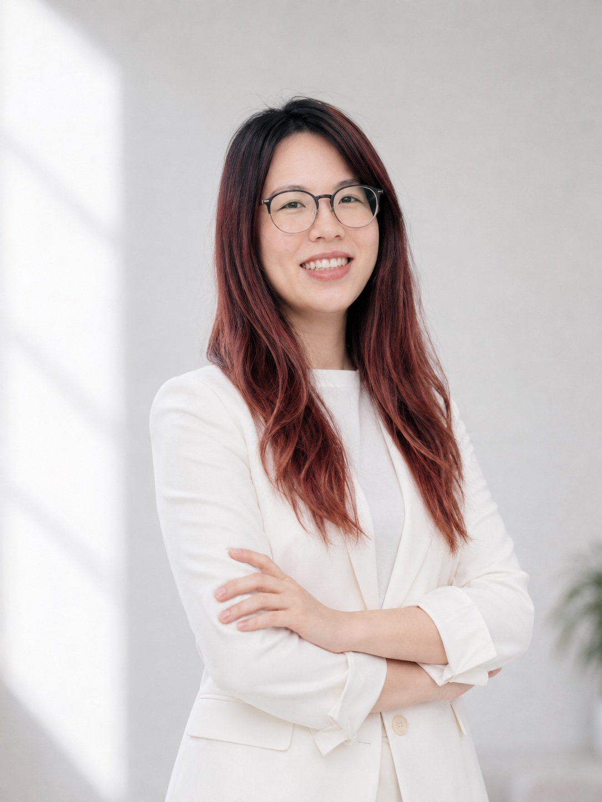
戲劇專業講師
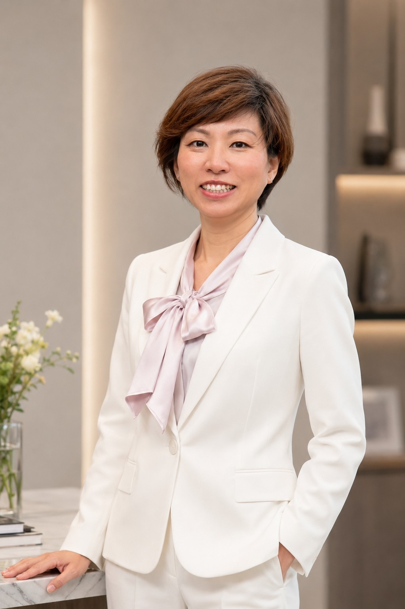
社會工作與社區教育
具社會工作、社區方案與跨產業實務經驗，長期參與家庭、社區及團體教育，將關懷、溝通與活動帶領帶進學習現場。
TEACHING & COLLABORATION
提供對象、人數、時間、場域與期待方向，由 WELLINA 協助整理合適的主題與講師合作方式。